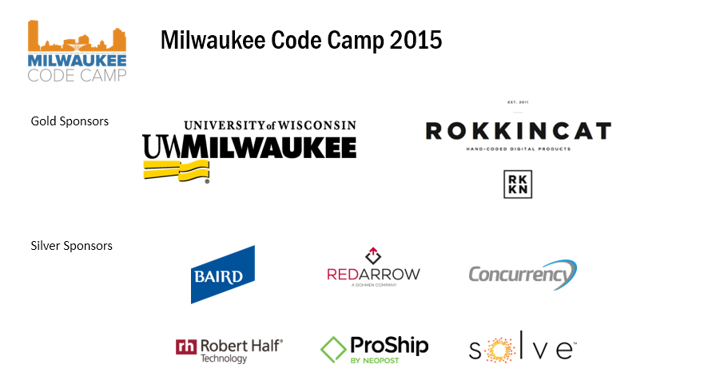
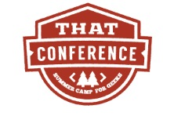

Jekyll

Jekyll is a simple, blog-aware, static site generator
Cross platform Ruby app works on:
Mac, Linux, Windows (maybe)

CIO
.Net dev 10 years
Sheboygan
distance cycling, golf, craft beer
Overview / Define / How It Works
Use Cases Pros / Cons
Static Site Generator Universe
Demos
Interactivity
Command line tool built on some stack:
ruby, python, node, .NET, go ....
Process <= Inputs Files (More on inputs in a moment)
Output => Static site (Html, CSS, Javascript...)
Active - server side logic
PHP, ASP.net, Node.js, Rails
Database
Content Management System
Database, Admin Panel
User Accounts Authentication / Authorization
Plugins
Common Functionality:
Create a new project
Build static website
Serve site locally
Configuration (typically in YAML)
Content (typically in Markdown)
Templating language (liquid, handlbars, razor)
HTML
CSS or LESS or SASS
Javascript
Assets (images etc)
Static Website
Blogs
Portfolios
Brochureware
Quick one-offs
Documentation
Prototypes
Fast
Secure
Save money on hosting
Deployment can be as simple as git push
Version control for posts / updates / changes
Too geeky for non-techie users
Limits to interactivity
Limited use cases
My journey...
StaticGen Top Open-Source Static Site Generators
Static Site Generators The definitive listing of Static Site Generators
GitHubPages
Jekyll
Pretzel
Wyam
Hugo
?
Hosted directly from your GitHub repository
Just edit, push, and your changes are live
That Conference 2015
Mike Ward's Presentation:
GitHub Pages: Websites for you and your projects

AUGUST 8th - 10th, 2016
Mobile, Web & Cloud Over 150 sessions. + Open Spaces
All at a giant waterpark, so bring the family.
Kalahari Resort, Wisconsin Dells
Create a new repository named: username.github.io
clone to desktop
download an exsisting repository
Edit to make it your own
-git push
Jekyll is a simple, blog-aware, static site generator
Cross platform Ruby app works on:
Mac, Linux, Windows (maybe)
gem install jekyll
apt-get installl ruby
gem install jekyll
Grab a beer. This is going to take a while.
sudo apt-get update
sudo apt-get install git-core curl zlib1g-dev build-essential libssl-dev libreadline-dev libyaml-dev libsqlite3-dev sqlite3 libxml2-dev libxslt1-dev libcurl4-openssl-dev python-software-properties libffi-dev
cd git clone git://github.com/sstephenson/rbenv.git .rbenv echo 'export PATH="$HOME/.rbenv/bin:$PATH"' >> ~/.bashrc echo 'eval "$(rbenv init -)"' >> ~/.bashrc exec $SHELL
git clone git://github.com/sstephenson/ruby-build.git ~/.rbenv/plugins/ruby-build echo 'export PATH="$HOME/.rbenv/plugins/ruby-build/bin:$PATH"' >> ~/.bashrc exec $SHELL
git clone https://github.com/sstephenson/rbenv-gem-rehash.git ~/.rbenv/plugins/rbenv-gem-rehash
rbenv install 2.2.3
rbenv global 2.2.3
ruby -v
gem install jekyll
Install Ruby and Ruby Dev Kit
gem install jekyll
Install python, pip, Pygments
Jekyll --watch gem install wdm
jekyll new
jekyll build
jekyll build --watch
jekyll serve
jekyll serve --watch
Jekyll New Project
Most popular
Standalone or built in to github pages
Great documentation
Large community
Lots of templates
Many examples of sites using Jekyll With Source!
A simple, pluggable site generation tool made with .NET
Pretzel follows the same conventions as Jekyll and should be compatible with basic Jekyll websites*
pretzel create
pretzel bake
pretzel taste
A simple to use, highly modular, and extremely configurable static content generator built on .Net.
Wyam is different. Everything is configured by chaining together flexible modules (that you can even write yourself).
Pipelines.Add("Posts",
ReadFiles(@"posts\*.md"), // Read all markdown files in the "posts" directory
FrontMatter(Yaml()), // Load any frontmatter and parse it as YAML markup
Markdown(), // Render the markdown content
Meta("Post", @doc.Content), // Move the markdown content to metadata
ReadFiles(@"posts\Post.cshtml"), // Load the Razor post page template
Razor(), // Compile and render the page template
Meta("PostFile", string.Format(@"posts\{0}.html", ((string)@doc["Title"]).ToLower().Replace(' ', '-'))), // Use the post title as the filename and save it in metadata so we can use it in links later
WriteFiles((string)@doc["PostFile"]) // Write the post file
);
Pipelines.Add("Home",
ReadFiles(@"*.cshtml").FromTopDirectoryOnly().Where(x => Path.GetFileName(x)[0] != '_'),
Razor(),
WriteFiles(".html")
);Does nothing out of the box
Create your own project structure
Configure your own static generator
New, not much community
Sites made with Wyam
A Fast and Modern Static Website Engine
GO language - very fast compared to ruby
Cross platform: Windows, Mac, Linux, BSD
Easy install: Get executable, Add to path
Good documentation
Taxonomies
Themes
Migration Tools from Word Press, Jekyll, others
hugo new site .
hugo new post/postname.md
hugo server
Hugo has no default theme
Add with git clone
hugo new site .
git clone https://github.com/SenjinDarashiva/hugo-uno.git themes/hugo-uno
git clone https://github.com/enten/hyde-y.git themes/hyde-y
hugo new post/welcome.md
Fast
Excellent documentation
Themes
Taxononmies
Community
Comments
Forms
Social Sharing Buttons
Twitter Feed
Database
Non-geek contibutors
<button onclick="load_disqus('{{ page.url }}', '{{ page.title }}');"
class="pure-button blog-comment-button">View/Add Comments</button><div id="disqus_thread"></div>function load_disqus(id, title) {
var disqus_shortname = 'quentin-blacklock';
window.disqus_identifier = id;
window.disqus_title = title;
(function () {
var dsq = document.createElement('script');
dsq.type = 'text/javascript';
dsq.async = true;
dsq.src = 'http://' + disqus_shortname + '.disqus.com/embed.js';
(document.getElementsByTagName('head')[0] || document.getElementsByTagName('body')[0]).appendChild(dsq);
})();
}

<a class="twitter-timeline" href="https://twitter.com/qblacklock"
data-widget-id="636161916788981762">Tweets by @qblacklock</a><script>
function(d, s, id) {
var js, fjs = d.getElementsByTagName(s)[0],
p = /^http:/.test(d.location) ? 'http' : 'https';
if (!d.getElementById(id)) {
js = d.createElement(s);
js.id = id;
js.src = p + "://platform.twitter.com/widgets.js";
fjs.parentNode.insertBefore(js, fjs);
}
}(document, "script", "twitter-wjs");
</script>JSON YAML TOML
Get CSV
Get JSON
Word Plugin
Word to Markdown converter

30-second slideshows for hackers.
Node based static site generator for presentations.
npm install -g cleaver
cleaver path/to/something.md
cleaver watch path/to/something-changing.md
Overview / Define / How It Works
Use Cases Pros / Cons
Static Site Generator Universe
Demos - GitHub Pages, Jekyll, Hugo
Interactivity